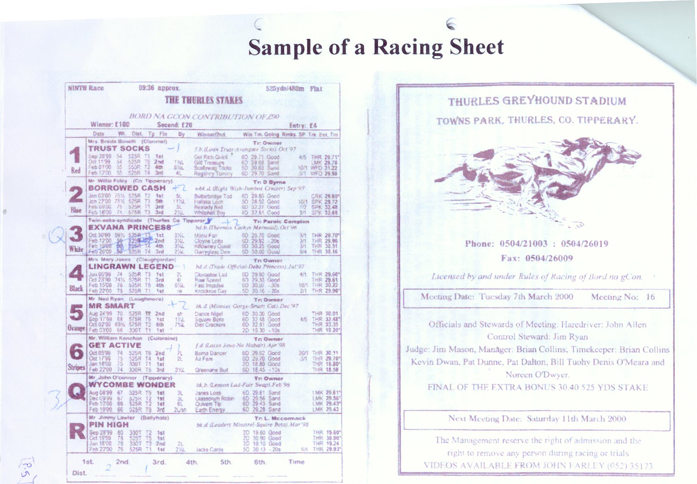

The racing programme is used so that punters and owners can keep track of races, times and results. The cover shows the name of the track, what date the race meeting is held and next held, names of the officials and judges and whether there are any high profile races/finals being held that night.There could be up to 11 races a night. The sheet shows the name of the race, who sponsors the subsidised prize money, what the winner and second place gets, the length of the race and the entry fee. An entry fee must be paid to pay for the prize money and the rest of the contribution goes to the winner.
The name of each dog is shown by the trap number. The Q and R stand for reserve dogs who take the place of non – running dogs as in the case of number 3 on the programme who is replaced by the reserve Q. At the bottom of the programme the punters can write down the time, distance between each dog, (which is measured in lengths) and what number came first. The number corresponds with the trap number of the dog.
Information about each dog is under their name. The sheet shows the owner and trainer’s name (if necessary), the parents of the dog, dog’s date of birth and where the owner is from. It also gives information about the dog’s last four races such as the date, weight, race length, it’s form, place, what and who it won/lost by, time of the winning dog, the state of the ground, the bet, what track and the time the dog ran.
The weight of a dog is announced before the race. By the last race the page is marked by a + or – sign and the difference between the weight of the dog at the last race and this one. As you can see it is written in pen as is the reserve dog’s letter. Basically, it gives all the information on the dog in a little box giving the punters a chance to decide if the dog is worth betting on.
Top/\ 
{kind=link}